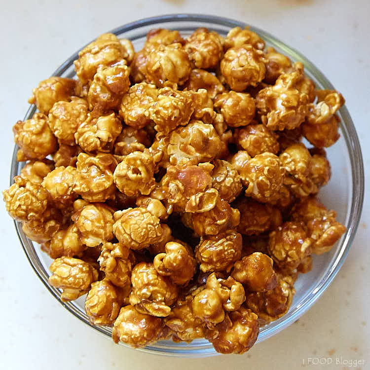

| MENU FOOD |
NAME FOOD |
PRICE |
ABOUT |
 |
Cheezy Nachos |
RM6.00 |
Nachos is a Tex-Mex dish from northern Mexico that consists of heated tortilla chips or totopos covered with melted cheese (or a cheese-based sauce), often served as a snack or appetizer. More elaborate versions of the dish add other ingredients, and may be substantial enough to serve as a main dish. |
 |
BBQ Nachos |
RM7.00 |
In large skillet, spread out two large handfuls of tortilla chips. Layer with half of the barbecue chicken, followed by half of the cheese, onion, tomato, bacon, and parsley. |
|  |
Caramel Popcorn |
RM5.00 |
This Caramel Popcorn (Or Caramel Corn) is a simple two step process. First, make a simple caramel sauce by boiling butter, brown sugar and corn syrup over the stove and pouring over your popcorn. Second, you bake the popcorn so it's wonderfully crunchy and not the wet, sticky stuff. |